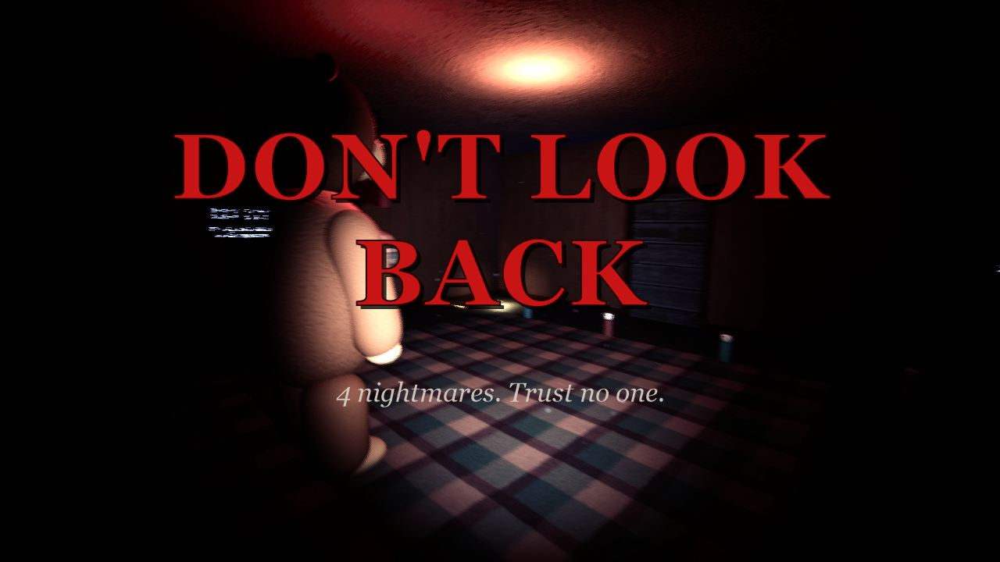
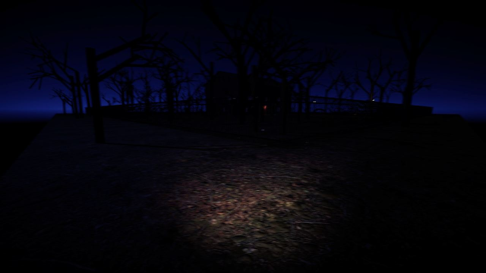
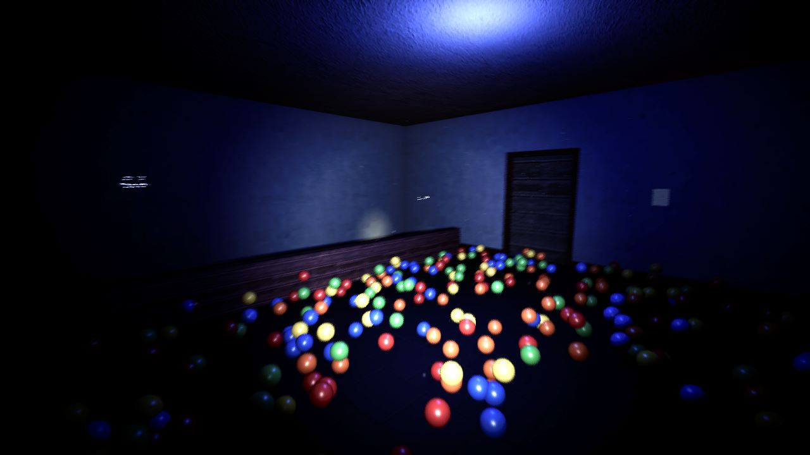
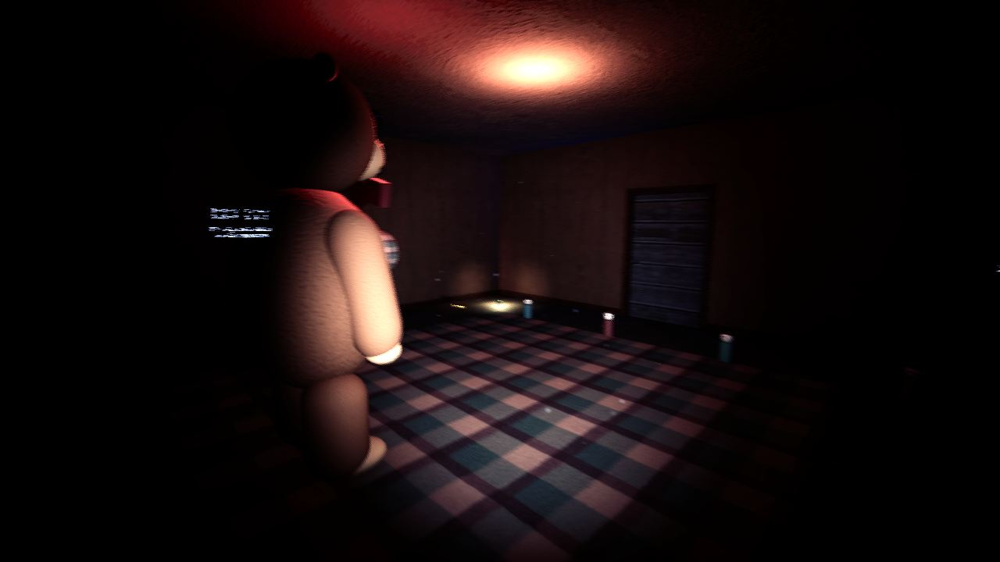
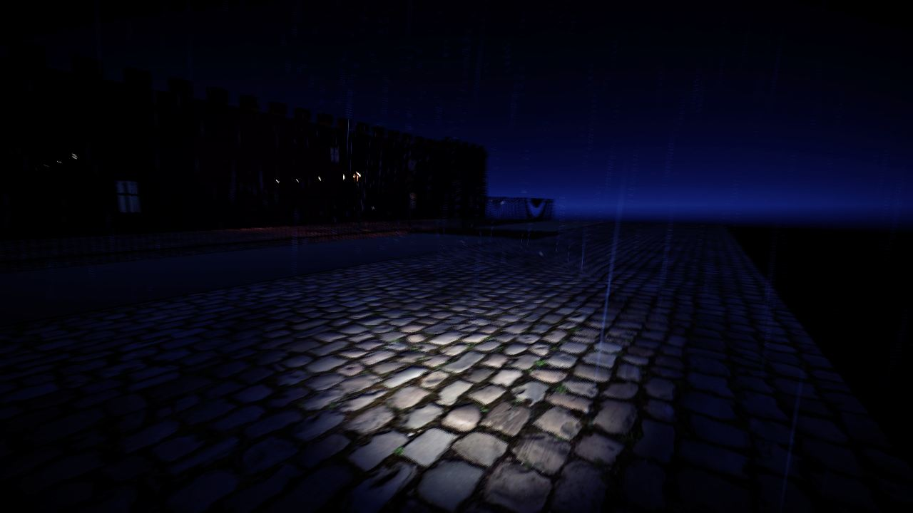

4 pesadillas. 4 monstruos. No confíes en nadie. No mires atrás.

Gratis · Solo para Windows 10/11 (64 bits) · instalador 239 MB, .zip 291 MB. Abre Dont-Look-Back-Setup.exe, pulsa Siguiente → Instalar y tendrás el icono en el Escritorio. Si Windows dice "Windows protegió tu PC", pulsa Más información → Ejecutar de todas formas. Con el .zip: descomprímelo y abre el juego.
Te despiertas en mitad de la noche... y no estás en tu casa. Las personas que encuentres te hablarán. Algunas te ayudarán... y otras te mentirán. "No confíes en nadie..."
Una casa en el bosque durante una tormenta. Una sombra se esconde en la oscuridad... solo tu linterna puede pararla.
Una fábrica de juguetes siniestra. El osito gigante solo se mueve cuando NO lo miras.
Un hotel abandonado de 5 pisos. El fantasma atraviesa las paredes y susurra tu nombre.
Su castillo. El jefe final. Abre puertas y revisa tus escondites. ¡Corre!
Linterna con batería, escóndete en armarios y bajo camas, aguanta la respiración.
Llaves, códigos, melodías de piano, cajas de fusibles y más.
Fácil, Normal y PESADILLA (una vida, poca luz). Puntos de control y cronómetro speedrun.
Solo sustos. Teclado + ratón o mando de Xbox.




WASD moverse · Ratón mirar · Shift correr · Ctrl/C agacharse · F linterna · E usar / esconderse / hablar · Espacio o clic derecho aguantar la respiración · Tab objetivos · Esc pausa. También con mando de Xbox.